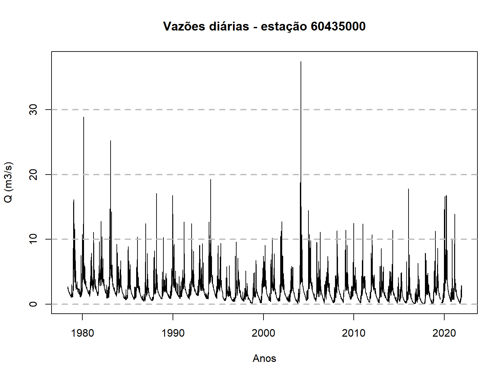
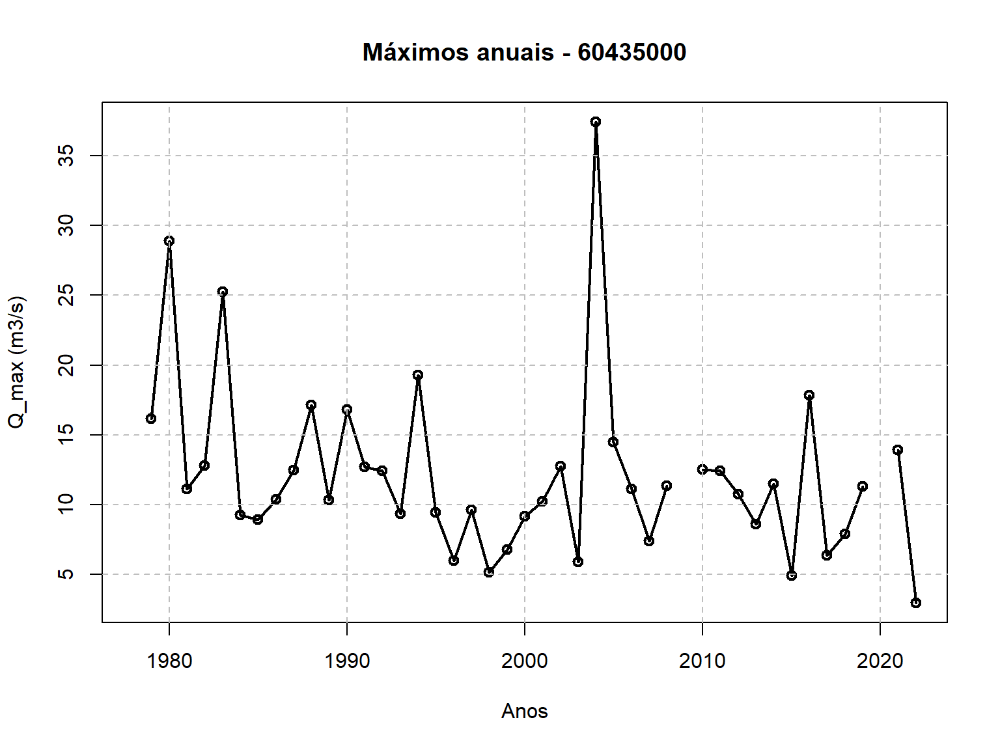
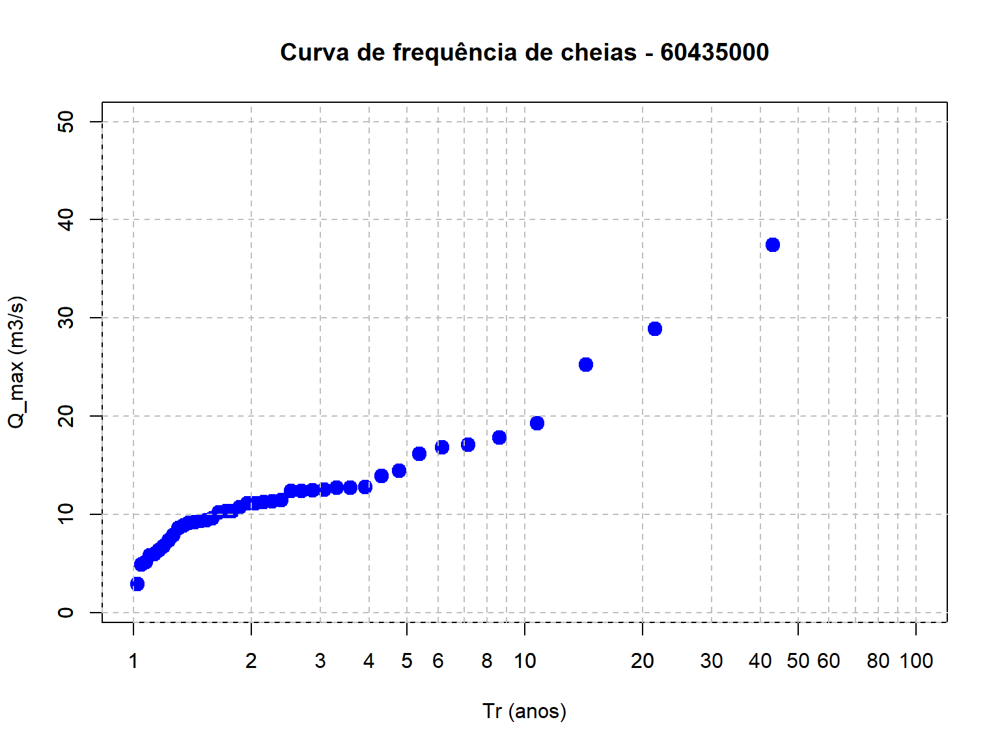

Objetivos da atividade
O objetivo desta atividade é realizar uma análise de frequência de cheias a nível local. Isso significa que iremos relacionar a magnitude das vazões máximas anuais com a probabilidade da mesma ser excedida. A análise a nível local siginifca que utilizaremos apenas as informações de vazão observadas na estação fluviométrica de interesse, sem fazer uso de informações sobre as vazões máximas anuais que teham acontecido em outras estações fluviométricas localizadas na região.
Além de construirmos a relação entre a magnitude das vazões máximas anuais e a respectiva probabilidade de excedência, é importante saber estimar também o grau de incerteza nessas estimativas. Essas incertezas são usualmente representadas por intervalos de confiança, como veremos mais adianate.
Além de calcular essas quantidades, a curva de frequência, e suas respectivas incertezas, são representadas graficamente, como na figura abaixo, que mostra os resultados para um estudo de cheias numa seção do Rio Salado, localizada na província de Santa Fé, na Argentina, onde em 2003 ocorreu o rompimento de um dique que resultou em perde de vidas humanas e elevados prejuízos.
Contruiremos aqui no curso uma figura semelhante a esta, onde no eixo-x temos o tempo de recorrência e no eixo-y a magnitude das vazões máximas anuais. O tempo de recorrência apresentado no eixo-x é uma maneira de representar a probabilidade de excedência. A linha cheia em vermelho representa o valor esperado dos valores da vazão máxima anual em função do tempo de recorrência, enquanto as linhas tracejadas representam os intervalos de confiança de 95%, ilustrando as incertezas envolvidas nessas estimativas. Os círculos azuis escuros representam as vazões máximas anuais registradas no passado, enquanto o círculo azul claro mostra a cheia destruidora de 2003.

(#fig:curva_freq)Curva de frequência do cheias do Rio Salado, na Argentina.
Seleção das vazões máximas anuais
O primeiro passo de nossa atividade consiste em obter a série de máximos anuais que desejamos analisar. A obtenção da série de máximos anuais será realizada em duas etapas. Primeiro vamos obter a séries de vazões diárias, e para isso utilizaremos a mesma função de obtenção de séries diárias de vazão que aprendemos na segunda aula deste curso. Com a série de vazões diárias em mãos, passaremos para a segunda etapa, que é a de extrair a vazão máxima de cada ano hidrológico.
Obtenção da série de vazões diárias
A função abaixo permite obter a série de vazões diárias de uma estação fluviométrica. O único argumento desta função é o código da estação. Quando chamamos esta função, ela retorna um dataframe com 3 colunas: o código da estação, a data, e o valor da vazão diária.
Como já estudamos esta função anteriormente, a uitlizaremos aqui sem entrar em qualqer detalhes sobre seu funcionamento.
# Função para obter série histórica de vazão de uma determinada estação ####
dados_serie_ANA <- function(cod_estacao = NA,
data_inicio = "01/01/1800",
data_fim = Sys.Date(),
tipo_dados = 3,
nivel_consist = 1){
# Pegar dados a partir do url e transformar em um dataframe
url_base <-
paste0("http://telemetriaws1.ana.gov.br/ServiceANA.asmx/",
"HidroSerieHistorica?",
"codEstacao=", cod_estacao,
"&dataInicio=", data_inicio,
"&dataFim=", data_fim,
"&tipoDados=", tipo_dados,
"&nivelConsistencia=", nivel_consist)
url_parse <- XML::xmlParse(url_base, encoding = "UTF-8")
node_doc <- XML::getNodeSet(url_parse, "//SerieHistorica")
dados_estacao <- XML::xmlToDataFrame(nodes = node_doc)
# Por algum motivo o hidroweb não está filtrando os dados pela consistencia
dados_estacao <- filter(dados_estacao, NivelConsistencia == nivel_consist)
# Separar data e hora
dados_estacao$Data <- as.Date(substr(dados_estacao$DataHora, 1, 10))
dados_estacao$Hora <- substr(dados_estacao$DataHora, 12, 19)
# Fazer um dataframe só com datas e valores de vazão
datas_dia <- seq.Date(from = min(dados_estacao$Data),
to = max(dados_estacao$Data) %m+% months(1) - 1,
by = "day")
tabela_final <- data.frame(Cod_estacao = dados_estacao$EstacaoCodigo[1],
Data = as.character(datas_dia),
Vazao = as.numeric(NA))
for(i in 1:nrow(tabela_final)){
# Dia em análise
dia <- as.numeric(substr(tabela_final$Data[i], 9, 10))
# Mês e ano em análise
mes_ano <- as.Date(paste0(substr(tabela_final$Data[i], 1, 8), "01"))
# Olhar a linha do mes e ano e escolher a coluna pelo dia + 15
linha_dado <- which(dados_estacao$Data == mes_ano)
# Se não tiver o mês nos dados da estação, colocar valor NA
ifelse(length(linha_dado) == 0,
tabela_final$Vazao[i] <- NA,
tabela_final$Vazao[i] <-
as.numeric(dados_estacao[linha_dado, (dia + 15)]))
}
return(tabela_final)
}Precisamos escolher uma estação fluviométrica para realizar nossa análise. SUgiro utilizar a estação 60435000, localizada na bacia do Rio Descoberto, que drena uma área de \(113.2 km^2\), mas vocês têm a indepedência de escolhar qualquer outras estação que esteja no banco de dados da Agência Nacional de Águas.
Para obter a série diária da estação escolhida, basta chamar a função acima passando o argumento necessário, que é simplesmente o código da estação desejada. A função devolve um dataframe com a série de máximos anuais.
Para fins de visualização, utilizamos a função
head(nome_do_dataframe) do R, como mostrado abaixo, que nos
mostra as primeiras 6 linhas do dataframe.
dados_60435000 <- dados_serie_ANA(cod_estacao = 60435000)
index_falha_diario <- which(is.na(dados_60435000[,3]==TRUE))
dias_falha <- dados_60435000[index_falha_diario,2:3]
head(dados_60435000) Cod_estacao Data Vazao
1 60435000 1978-05-01 NA
2 60435000 1978-05-02 NA
3 60435000 1978-05-03 NA
4 60435000 1978-05-04 NA
5 60435000 1978-05-05 NA
6 60435000 1978-05-06 NAAlém disso, é sempre importante visualizar os dados para que se teha uma ideia geral da faixa de variação das vazões, sazonalidade e outras padrões que possa ser percebidos num gráfico.
Aqui, nós plotaremos a série completa das vazões diárias da estação
60435000 utilizando o código abaixo, que emprega o
chamado R-base, ao invés de pacote ggplot2.
time <- as.Date(dados_60435000$Data)
plot(time,dados_60435000$Vazao,type="l",
main = "Vazões diárias - estação 60435000",
xlab = "Anos",ylab = "Q (m3/s)")
# Adiciona grid horizontal apenas
grid(nx = NA, ny = NULL,
lty = 2, # Grid line type
col = "gray", # Grid line color
lwd = 2) # Grid line width
Pode-se notar que nos seis primeiros dias dos dados, que se inicia em maio de 1978, não temos valores registrados de vazão.
Extração da série de vazões máximas anuais
Com a série de vazões diárias, passamos ao segundo passo que é o de construir a série de máximos anuais com base no ano hidrológico. Para isso, utilizaremos uma outra função, que é apresentada abaixo. Veja que a função internamente considera o ano hidrológico com início no mês de agosto. O mês de início do ano hidrológico pode ser facilmente alterado, se for o desejo do analista. Uma outra solução seria reesecrever a função incluindo como argumento o mês de início do ano hidrológico.
# Contrução da série de máximos anuais a partir de um ano hidrológico ####
fun_max_ano <- function(tabela = NA,
comeco_ano_hidro = 8){
# Transformar a coluna Data em "Dates" (caso esteja em character)
tabela$Data <- as.Date(tabela$Data)
# Definir se o mês em questão entra no ano atual ou no próximo ano
desloc_ano <- ifelse(month(tabela$Data) < comeco_ano_hidro, 0, 1)
# Ano Hidro
tabela$ano_hidro <- year(tabela$Data) + desloc_ano
# Fazer uma tabela final apenas com os máximos anuais
max_anuais <-
tabela %>%
group_by(Cod_estacao, ano_hidro) %>%
summarise(maxima = max(Vazao))
}Para finalmente obtermos a série de máximos anuais, basta chamar a
função fornecendo o arquivo que contém as séries diárias de vazão, que
no nosso caso é o dados_60435000. Mais uma vez, podemos
utilizar a função head para dar uma leve espiada nas
informoações contidas no dataframe.
Q_max <- fun_max_ano(dados_60435000)
head(Q_max)# A tibble: 6 × 3
# Groups: Cod_estacao [1]
Cod_estacao ano_hidro maxima
<chr> <dbl> <dbl>
1 60435000 1978 NA
2 60435000 1979 16.1
3 60435000 1980 28.9
4 60435000 1981 11.1
5 60435000 1982 12.8
6 60435000 1983 25.3A função fun_max_ano foi escrita de forma que qualquer
falha na série de vazões diárias num dado ano hidrológico resulta numa
falha na série de máximos anuais. Isso nem semrpe é necessário, já que
falhas no período de estiagem não indicam falhas nas séries de máximos,
mas creio que a função nos serve bem para este curso.
Podemos notar a presença de um NA na nossa plotagem
acima. É interessante verificar o número total de anos disponíveis com
dados diários de vazão, bem como o número de anos com falaha na série de
máximos anuais.
O número de anos com dados de vazões diárias pode ser obtidos
simplemente identificando o número de linhas no dataframe
Q_max, e para isso utilizamos o código abaixo,
n_anos <- nrow(Q_max)
n_anos[1] 45Mas já sabemos que o ano de 1978 não contém o valor de vazão máxima
porque a série de vazões diárias não estava complete. Será que há outros
anos no histórico com esse problema. Para identificar se há falha em
outros anos, utilizaremos duas funções do R de forma conjunta,
is.na e which. A função is.na
identifica se o elemento é um NA ou não, retornando um
valor lógico, TRUE ou FALSE, enquanto a função
which permite identificar a posição de uma dada condição. O
código abaixo permite identificar em quais anos ocorrem falhas na série
de máximos anuais,
# A tibble: 3 × 2
ano_hidro maxima
<dbl> <dbl>
1 1978 NA
2 2009 NA
3 2020 NAA primeira linha de código identifica as posições em que há a
presença de NA na terceira coluna do dataframe, que é a
coluna com as informações sobre as vazões máximas de cada ano
hidrológico, e associa à variável index. Na linha seguinte,
criamos um novo dataframe com a informação dos anos em que temos falhas
nos dados.
É verdade que poderíamos ter escrito o código acima de uma forma mais compacta, porém ficaria mais difícil de entender. Veja o que vocÊ acha?
# A tibble: 3 × 2
ano_hidro maxima
<dbl> <dbl>
1 1978 NA
2 2009 NA
3 2020 NAMais à frente, quando tivermos que fazer os cálculos necessários para realizar a naálise de frequência, teremos que nos livrar desses anos com falhas. Mas por enquanto vamos deixá-los ocmo estão, e passemos a etapa seguinte que é a de visualizar a série de máximos anuais.
Visualização da série de máximos anuais
Agora já podemos visualizar a série de máximos anuais que serivirão
de base para a nossa análise de frequência. Essa visaulização pode ser
feita com o código abaixo, que utiliza apenas o R-base.
plot(Q_max$ano_hidro,Q_max$maxima,type = "o",
main = "Máximos anuais - 60435000",
xlab = "Anos",ylab = "Q_max (m3/s)",lwd = 2)
# Adiciona grid
grid(nx = NULL, ny = NULL,
lty = 2, # Grid line type
col = "gray", # Grid line color
lwd = 1) # Grid line width
Construção da curva de frequência amostral
Posição de plotagem
Para que possamos plotar os círculos azuis escuros da Figura apresentada anteriormente, para o caso do Rio Salado, que representam as vazões máximas anuais observadas na série histórica, precisamos determinar as chamadas posição de plotagem, que para a referida Figura é o tempo de recorrência estimado para cada um desses valores.
Para que seja possível entender esta etapa, vale a pena investir um certo tempo do curso em alguns conceitos básicos.
O tempo de recorrência associado a uma determinada magnitude de vazão, \(T_r(q)\), é um conceito hidrológico bastante conhecido, de forma que não dedicaremos muito tempo para discutí-lo aqui. Por definição, o tempo de recorrência de um evento, cuja magnitude vale \(q\), é igual ao inverso da probabilidade da vazão máxima anual exceder esse valor,
\[T_r(q) = \frac{1}{P(Q>q)}\]
Por exemplo, se a probabilidade da vazão máxima anual ultrapassar um dado valor \(q\) for igual a 0.10, dizemos que o tempo de recorrência dessa vazão \(q\) é de 10 anos. Da mesma forma, se \(P(Q>q)=0.01\), dizemos que o tempo de recorrência de \(q\) vale 100 anos.
Portanto, para que possamos incluir as vazões observadas na nossa curva de frequência, será preciso determinar a probabilidade de excedência de cada uma das observações contidas na série de vazões máximas anuais da localidade de interesse. Como o intuito neste primeiro momento é plotar as vazões observadas na curva de frequência, nos basearemos na chamada distribuição empírica de frequência.
A distribuição empírica de frequência relaciona cada valor de vazão máxima observada na série histórica, denominada aqui de \(q_i\), com sua frequência relativa acumulada, \(\hat{F}_Q(q_i)\), que representa a nossa estimativa para a probabilidade da variável de interesse, \(Q\), ser menor ou igual ao valor amostral, \(q_i\),
\[\hat{F}_Q(q_i) = \hat{P}(Q \le q_i)\]
em que \(\hat{F}_Q\) é a estimativa da frequência relativa acumulada da variável aleatória \(Q\) baseada na amostra, enquanto \(q_i\) reprenta o valor de uma dada observação \(i\). O uso do acento circunflexo na equação acima é uma convenção utilizada em estatística para mostrar que estamos nos referindo a uma estimativa da grandeza em questão baseada na amostra que se tem em mãos.
Bem, quando falamos em \(T_r(q)\), nos referimos à probabilidade de excedência, que é na verdade o complemento de \(\hat{F}_Q(q_i)\), ou seja,
\[\hat{P}(Q \gt q_i) = 1 - \hat{P}(Q \le q_i)\] de forma que
\[\hat{T}_r(q_i) = \frac{1}{1-\hat{P}(Q \le q_i)}\]
Pode parecer estranho se você estiver vendo isso pela primeira vez, mas a verdade é que há diferentes maneiras de se estimar a distribuição empírica de frequência das observações de uma amostra,\(\hat{P}(Q\le q_i)\), ou seu complemento, \(\hat{P}(Q\gt q_i)\).
Uma maneira bem comum de estimar tais probabilidades, quando se tem uma amostra de tamanho \(n\), consiste em ordenar a série em ordem decrescente e determinar a probabilidade de excedência utilizando a seguinte fórmula,
\[\hat{P}(Q > q_{(i)}) = 1 - \hat{F}_Q(q_{(i)}) = \frac{i}{n+1}\]
em que \(q_{(i)}\) representa a chamada estatística de ordem \(i\), em que \(q_{(1)}\gt q_{(2)}\gt \ldots \gt q_{(n)}\), de forma que \(q_{(1)}\) e \(q_{(n)}\) são, respectivamente, a maior e a menor observações da amostra. De acordo com essa expressão, por exemplo, numa amostra de tamanho 49, a probabilidade da vazão máxima anual ser maior do que a maior observação da amostra vale \(P(Q>q_{(1)})=0.02\)), o que resulta num tempo de recorrência de \(T_r(q_{(1)})=50\) anos.
Não se preocupe tanto se esse conceito de posição de plotagem não ficou totalmente claro. Basta saber que plotaremos os valores de máximos anuais da amostra na curva de frequência utilizando a posição de plotagem de Weibull.
Na verdade, utilizaremos o tempo de recorrência, \(T_r\), para plotagem, lembrando que o \(T_r\) é simplemenste o inverso da probabilidade de excedência, representada pela posição de plotagem de Weibull.
O código para o cálculo do \(Tr\) é apresentado abaixo. Para facilitar a compreenção de como o cálculo é feito, criaram-se três novas colunas ao dataframe que contém as vazões máximas anuais. Mas antes disso, efetuou-se o ordenamento das vazões máximas em ordem decrescente, ou seja, o primeiro valor de vazão da nova série ordenada é o maior da amostra.
As três novas colunas são, respectivamente, o índice das vazões, começando de 1 indo até o número total de valores, a posição de plotagem de Weilbull, que expressa a probabilidade de excedência, e por último o tempo de recorrência, \(Tr\).
# Remoção dos anos com falha
Q_max <- na.omit(Q_max)
# Ordenamento decrescente do dataframe
Q_max_ord <- Q_max[order(Q_max$maxima, decreasing = TRUE), ]
# Inclusão de Três novas colunas: index, posição de plotagem de Weibull, e Tr
Q_max_ord$index <- seq(from = 1,to = nrow(Q_max_ord))
Q_max_ord$weibull <- Q_max_ord$index/(nrow(Q_max_ord) + 1)
Q_max_ord$Tr <- 1/Q_max_ord$weibullComo já fizemos antes, podemos dar uma espiada nesse novo dataframe
com as vazões máximas anuais ordenada utilizando a função
head(dataframe_name),
head(Q_max_ord)# A tibble: 6 × 6
# Groups: Cod_estacao [1]
Cod_estacao ano_hidro maxima index weibull Tr
<chr> <dbl> <dbl> <int> <dbl> <dbl>
1 60435000 2004 37.5 1 0.0233 43
2 60435000 1980 28.9 2 0.0465 21.5
3 60435000 1983 25.3 3 0.0698 14.3
4 60435000 1994 19.3 4 0.0930 10.8
5 60435000 2016 17.8 5 0.116 8.6
6 60435000 1988 17.1 6 0.140 7.17A última coluna de Q_max_ord contém o valor do tempo de
recorrência de cada uma das observações contidas na amostra. Vale notar
que as observações em Q_max_ord estão ordenadas em ordem
decrescente.
Podemos agora criar uma Figura, similar àquela apresentada para o estudo do Rio Salado. Porém, nesta etapa de nossa análise, apenas os valores amostrais das vazões máximas serão apresentados.
plot(Q_max_ord$Tr,Q_max_ord$maxima,type = "p", pch = 19,cex = 1.5,col = "blue",
log = "x",main = "Curva de frequência de cheias - 60435000",
xlab = "Tr (anos)",ylab = "Q_max (m3/s)",
xlim = c(1, 100), # X-axis limits
ylim = c(1, 50))
# Adiciona grid horizontal
axis(1, at = c(seq(1,10,by=1),seq(10,100,by=10),seq(200,1000,by=100)),
tck = 1, lty = 2, col = "gray")
# Adiciona grid vertical
axis(2, tck = 1, lty = 2, col = "gray")
Ajuste de uma distribuição teórica de probabilidades
A distribuição lognormal
Se considerarmos que as vazões máximas anuais \((Q)\) possuem uma distribuição lognormal, então os logaritmos de \(Q\), chamados aqui de \(Y = ln(Q)\), terão, por definição, uma distribuição normal,
\[ Y = ln(Q) \sim N(\mu_Y,\sigma_Y^2) \] o que significa dizer que os logarítmicos das vazões máximas anuais são bem representados por uma distribuição Normal com parâmetros \(\mu_Y\) e \(\sigma_Y^2\), que, para quem não lembra, representam a média e a variância populacionais.
O adjetivo populacional utilizado aqui é para lembrarmos que essas caracerísticas da distribuição são, na verdade, desconhecidas. A única pista que temos sobre o valor desses parâmetros está contida na amostra que temos, formada por um conjunto de vazões máximas anuais. A maneira que utilizaremos a amostra para tentar compreender essa distribuição é o assunto da próxima seção.
Quantis de cheia da lognormal
É muito provável que vocês não se recordem, mas a distribuição Normal possui uma caracterísitca bastante interessante. Se aplicarmos uma transformação linear numa variável normalmente distribuída, a nova variável continua sendo normalmente distribuída, porém com diferentes valores para os parâmetros da distribuição.
Uma transformação bastante útil é aquela em que a variável é transformada numa variável normal-padrão, usualmente representada pela letra \(Z\). A variável normal-padrão \(Z\) possui média zero e variância unitária, \(Z \sim N(0,1)\). Qualquer variável que possui distribuiçao Normal pode ser transformada numa variável normal-padrão, bastando subtrair sua média e dividir pelo seu desvio-padrão,
\[ Z = \frac{Y-\mu_Y}{\sigma_Y}\sim N(0,1) \]
Essa transformação é bastate útil aqui, pois utilizaremos o quantil da variável normal-padrão, \(Z_p\), para escrever o quantil de \(Y\), \(Y_p\), e também o quantil de cheia, \(Q_p\).
Quantil de uma variável aleatória, para quem não se lembra, é o valor da variável associado a uma dada probabilidade de não-excedência. Por exemplo, por definição, a probabilidade da variável aleatória \(X\) ser menor ou igual ao quantil \(x_p\) é igual a p,
\[ P(X\le x_p)=p \] Portanto, a probabilidade da variável normal-padrão, \(Z\), ser menor do que os quantis \(Z_{0.10}\), \(Z_{0.50}\) e \(Z_{0.90}\) é, respectivamente, 0.10, 0.50 e 0.90.
Como \(Z = (Y-\mu_Y)/\sigma_Y\), podemos dizer que \(Z_p = (Y_p-\mu_Y)/\sigma_Y\), de forma que
\[ Y_p = \mu_Y + Z_p\sigma_Y \] E como \(Y=ln(Q)\), podemos afirmar que
\[ Q_p = exp(\mu_Y + Z_p\sigma_Y) \] em que \(Q_p\) é o quantil populacional da variável aleatória \(Q\), que representa as vazões máximas anuais. Da mesma for que \(\mu_y\) e \(\sigma_Y\) são desconhecidos, \(Q_p\) também é. A única maneira de estimar \(Q_p\) é por meio das estimativas de \(\mu_Y\) e de \(\sigma_Y\).
Método de ajuste
Existem diversos métodos para ajustar uma distribuição teórica de probabilidades aos dados que se tem em mãos. Para o caso da distribuição lognormal com 2 parâmetros, sabe-se que a forma mais eficiente de estimar os parâmetros \(\mu_Y\) e \(\sigma_Y^2\) é por meio do método dos momentos, que será explicado na sequência.
Com base numa série de vazões máximas anuais \(\{Q_1,Q_2,\ldots,Q_n\}\), determinamos uma nova série com base no logarítmos da série original, \(Y = \{Y_1,Y_2,\ldots,Y_n\}\).
Em seguida, aplicamos o métodos dos momentos para estimar \(\mu_Y,\sigma_Y^2\), o que consiste em igual esses parâmetros aos seus valores amostrias, ou seja,
\[ \hat{\mu}_Y = \bar{Y} = \frac{\sum_1^n y_i}{n} \] e
\[ \hat{\sigma}_Y^2 = \frac{\sum_{i=1}^n (y_i - \bar{Y})^2}{n-1} \] Vale notar mais uma vez que \(\hat{\mu}_Y\) e \(\hat{\sigma}_Y^2\) possuem um acento circunflexo para indicar que eles são os estimadores amostrais dos parâmetros populacionais \(\mu_Y\) e \(\sigma_Y^2\).
Com os valores de \(\hat{\mu}_Y\) e \(\hat{\sigma}_Y^2\), podemos estimar os quantis de \(Y\) e de \(Q\),
\[ \hat{Y}_p = \hat{\mu}_Y + Z_p\hat{\sigma}_Y \] e
\[ \hat{Q}_p = exp(\hat{\mu}_Y + Z_p\hat{\sigma}_Y) \]
Ajuste da lognormal e estimativa dos quantis
Então, vamos ao que interessa. Temos basicamente que realizar três etapas para determinar os quantis de cheia com base na distribuição lognormal,
- Construir a série \(Y = ln(Q)=\{Y_1,Y_2,\ldots,Q_n\}\)
- Estimar os parâmetros \(\mu_y\) e \(\sigma_Y^2\) por meio dos estimadores \(\hat{\mu}_Y\) e \(\hat{\sigma}_Y^2\)
- Estimar os quantis de cheia, \(Q_p\), por meio do estimador \(\hat{Q}_p = exp(\hat{\mu}_Y + Z_p\hat{\sigma}_Y)\)
O código para realizar esse ajuste segue abaixo,
# Determinar a nova série Y = ln(Q)
Q_max_ord$Y <- log(Q_max_ord$maxima)
# Estimar os parâmetros da distribuição Normal, sabendo que Y ~ N(mu_y,sigma2_Y)
mu_Y_hat <- mean(Q_max_ord$Y)
sigma2_hat <- var(Q_max_ord$Y)
# Estimar os quantis de Y e de Q
p <- seq(from = 0.01,to = 0.99,by = 0.01) # define valores de p que serão empregados para os quantis
Tr <- 1/(1-p) # Calcula os tempos de recorrência para cada valro de p
z_p <- qnorm(p, 0, 1) # quantil da normal-padrão
y_p_hat <- mu_Y_hat + z_p*sqrt(sigma2_hat) # estimativa do quantil de Y
q_p_hat <- exp(y_p_hat) # estimativa do quantil de Q
# Criação de um dataframe com os quantis de cheia
Quantis_Q <- data.frame(q_p_hat,Tr)Podemos dar uma espiada no dataframe que contém os quantis de cheia
utilizando a função head(dataframe.name),
head(Quantis_Q) q_p_hat Tr
1 3.603989 1.010101
2 4.101790 1.020408
3 4.452708 1.030928
4 4.736340 1.041667
5 4.980326 1.052632
6 5.197874 1.063830Podemos perceber que os seis primeiros valores dos quantis estimados
não são tão interessantes, pois eles estão associados a tempos de
recorrência muito baixos. Existe uma outra função no função no
R que permite espiar a parte final do dataframe, ao invés
da parte inicial. Essa função é chamada de
tail(dataframe.name).
tail(Quantis_Q,5) q_p_hat Tr
95 23.73313 20.00000
96 24.95571 25.00000
97 26.54536 33.33333
98 28.81638 50.00000
99 32.79664 100.00000O número 5 no código acima serve para especificar
quantas linhas eu estou interessado em ver.
plot(Q_max_ord$Tr,Q_max_ord$maxima,type = "p", pch = 19,cex = 1.5,col = "blue",
log = "x",main = "Curva de frequência de cheias - 60435000",
xlab = "Tr (anos)",ylab = "Q_max (m3/s)",
xlim = c(1, 100), # X-axis limits
ylim = c(1, 50))
# Adiciona a LN2
lines(Quantis_Q$Tr,Quantis_Q$q_p_hat,
col = "red",
lwd = 2)
# Adiciona grid horizontal
axis(1, at = c(seq(1,10,by=1),seq(10,100,by=10),seq(200,1000,by=100)),
tck = 1, lty = 2, col = "gray")
# Adiciona grid vertical
axis(2, tck = 1, lty = 2, col = "gray")
Determinação dos quantis de cheia
Descrição das incertezas
Quando realizamos uma análise de frequência, além da estimativa dos quantis de cheia, precisamos ter uma ideia doo quão confiantes estamos em relação aos valores estimados. Sendo assim, precisamos entender como calcular a precisão dessas estimativas.
Normalmente, a maneira que empregamos para descrever as incertezas nas estiamtovas dos quantis de cheias é por meio de intervalos de confiança.Neste nosso exercício aqui, aprenderemos como calcular intervalos de confiança associados à distribuição lognormal, que é a distribuição que está sendo utilizados por nós para construir a curva de frequência.
Existem duas maneiras de se calcular intervaloes de confiança para a distribuição lognormal,
- intervalos aproximados
- intervalos exatos
Aqui aprenderemos como determinar intervalos de confiança aproximados para os quantis de cheia oriundos da distribuição lognormal.
Lógica da construção de intervalos de confiança aproximados
Suponha que tenhamos uma estimador qualquer denominado \(\hat{W}_p\). Estou usando a variável \(W\) apenas para reforçar a ideia de que não precisa ser aquele estimador apresentado anteriormente, que chamamos de \(\hat{Q}_p\), embora possa ser.
Para a quase totalidade de possíveis estimadores, quando \(n\rightarrow \infty\), ou em outras palavras, à medida que a amostra aumenta e passa a ter um número bem grande de observações, esses estimadores tendem a ter uma distribuição Normal. Como um estimador depende da amostra que se tem em mãos, ele é também uma variável aleatória. E como toda variável aleatória, seu comportamento pode se descrito por uma distribuição teórica de probabilidades.
Bem, se \(\hat{W}_p\) possui distribuição Normal e variância \(V(\hat{W}_p)\), então
\[ Z = \frac{\hat{W}_p-E[\hat{W}_p]}{\sqrt{V(\hat{W}_p)}} \] Como \(Z\sim N(0,1)\), podemos afirmar que
\[ P(z_{\alpha/2}\le Z \le z_{1-\alpha/2}) = \alpha \] Se substituirmos \(Z\) da equação acima pela equação anterior, obtemos
\[ P\Bigg(z_{\alpha/2}\le \frac{\hat{W}_p-E[\hat{W}_p]}{\sqrt{V(\hat{W}_p)}} \le z_{1-\alpha/2}\Bigg) = \alpha \] Depois de algumas manipulações algébricas, e admitindo que o estimador _p é não-tendencioso, o que significa dizer que \(E[\hat{W}_p]=W_p\), chegamos à afirmação abaixo,
\[ P\Bigg(\hat{W}_p - z_{1-\alpha/2}\sqrt{V(\hat{W}_p)} \le W_p \le \hat{W}_p + z_{1-\alpha/2}\sqrt{V(\hat{W}_p)}\Bigg) = \alpha \] que em bom português diz que a probabilidade do valor populacional de \(W_p\) estar entre esses dois limites, \(\hat{W}_p \pm z_{1-\alpha/2}\sqrt{V(\hat{W}_p)}\) é igual à \(\alpha\). É essa afirmação matemática que nos permite estabelecer o intervalo de confiança de \(100(1-\alpha)\%\) para \(W_p\), apresentado abaixo,
\[ \Bigg[\hat{W}_p - z_{1-\alpha/2}\sqrt{V(\hat{W}_p)};\hat{W}_p + z_{1-\alpha/2}\sqrt{V(\hat{W}_p)}\Bigg] \]
Sendo assim, podemos construir o intervalo de confiança aproximado de \(Y_p=ln(Q_p)\) e de \(Q_p\), que é o que de fato nos interessa.
Primeiro, constuímos o intervalo de confiança aproximado de \(Y_p\),
\[ \Bigg[\hat{Y}_p - z_{1-\alpha/2}\sqrt{V(\hat{Y}_p)};\hat{Y}_p + z_{1-\alpha/2}\sqrt{V(\hat{Y}_p)}\Bigg] \]
O problema aqui é que ainda precisamos saber quem é \(V(\hat{Y}_p)\). Este não é um curso de
estatística, mas sim de R aplicado à Hidrologia. Por isso,
deixarei a explicação de como determinar \(V(\hat{Y}_p)\) num local separado,
There is a lot of information within this practical book and we do not expect you to read everything we link to. You should attend each lecture, go through every practical and do some associated reading.
This is a 15 credit module, equivalent to 150 hours of study (including the taught sessions). Outside of our lectures and practical sessions (3 hours a week) you should be spending an extra 12 hours a week on this module.
\[ \begin{align} V(\hat{Y}_p) &= V(\hat{\mu}_y + z_p\hat{\sigma}_Y)\\ &= V(\hat{\mu}_y) + V(z_p\hat{\sigma}_Y)\\ &= V(\hat{\mu}_y) + z_p^2V(\hat{\sigma}_Y)\\ &= \frac{\hat{\sigma}_Y^2}{n} + z_p^2V(\hat{\sigma}_Y) \end{align} \]
\[ \begin{align} V(\hat{Y}_p) &= V(\hat{\mu}_y + z_p\hat{\sigma}_Y)\\ &= V(\hat{\mu}_y) + V(z_p\hat{\sigma}_Y)\\ &= V(\hat{\mu}_y) + z_p^2V(\hat{\sigma}_Y)\\ &= \frac{\hat{\sigma}_Y^2}{n} + z_p^2V(\hat{\sigma}_Y) \end{align} \] Pode-se mostrar que \(V(\sigma_Y)\approx \hat{\sigma}_Y^2/(2n)\), o que resulta na seguinte expressão para \(V(\hat{Y}_p)\),
\[ V(\hat{Y}_p) \approx \frac{\hat{\sigma}_Y^2}{n}\Bigg(1+\frac{1}{2}Z_p^2\Bigg) \]
Dessa forma, o intervalo de confiança de \(100(1-\alpha)\%\) para \(Y_p\) pode ser descrito como
\[ \Bigg[\hat{Y}_p - z_{1-\alpha/2}\sqrt{\frac{\hat{\sigma}_Y^2}{n}\Bigg(1+\frac{1}{2}Z_p^2\Bigg)};\hat{Y}_p + z_{1-\alpha/2}\sqrt{\frac{\hat{\sigma}_Y^2}{n}\Bigg(1+\frac{1}{2}Z_p^2\Bigg)}\Bigg] \]
Para determinar o o intervalo de confiança de \(100(1-\alpha)\%\) para \(Q_p\), basta exponenciar o intervalo acima,
\[ \begin{align} IC_{(1-\alpha)}(Q_p) &= exp\Bigg[\hat{Y}_p \pm z_{1-\alpha/2}\sqrt{\frac{\hat{\sigma}_Y^2}{n}\Bigg(1+\frac{1}{2}Z_p^2\Bigg)}\Bigg]\\ &= exp\Bigg[(\hat{\mu}_Y+z_p\hat{\sigma}_y) \pm z_{1-\alpha/2}\sqrt{\frac{\hat{\sigma}_Y^2}{n}\Bigg(1+\frac{1}{2}Z_p^2\Bigg)}\Bigg] \end{align} \]
Por exemplo, suponha que queiramos estabelecer o intervalo de confiança de 95% para o quantil \(Q_99\), equivalente à cheia de 100 anos de recorrência. Nesse caso, \(\alpha = 0.05\) e \(p=0.99\), o que leva a seguinte intervalo de confiança,
\[ \begin{align} IC_{.95}(Q_{0.99}) &= exp\Bigg[(\hat{\mu}_Y+z_{.99}\hat{\sigma}_y) \pm z_{.975}\sqrt{\frac{\hat{\sigma}_Y^2}{n}\Bigg(1+\frac{1}{2}Z_{.99}^2\Bigg)}\Bigg]\\ &=exp\Bigg[(\hat{\mu}_Y+2.326\hat{\sigma}_y) \pm 1.96\sqrt{\frac{\hat{\sigma}_Y^2}{n}\Bigg(1+\frac{1}{2}2.326^2\Bigg)}\Bigg] \end{align} \]
plot(Q_max_ord$Tr,Q_max_ord$maxima,type = "p", # plota apenas pontos
pch = 19,col = "blue", cex = 1.5, # círculos azuis de tamanho 1.5
log = "x", # escala logaritmica no eixo-x
main = "Curva de frequência de cheias - 60435000", # título
xlab = "Tr (anos)",ylab = "Q_max (m3/s)", # nome dos eixos
xlim = c(1, 100), # limites od eixo-x
ylim = c(1, 50)) # limites do eixo-y
# Adiciona a LN2
lines(Quantis_Q$Tr,Quantis_Q$q_p_hat,
col = "red",
lwd = 2)
# Adiciona IC
lines(Quantis_Q$Tr,lower_IC,
col = "red",lty = 2,
lwd = 2)
lines(Quantis_Q$Tr,upper_IC,
col = "red",lty = 2,
lwd = 2)
# Adiciona grid horizontal
axis(1, at = c(seq(1,10,by=1),seq(10,100,by=10),seq(200,1000,by=100)),
tck = 1, lty = 2, col = "gray")
# Adiciona grid vertical
axis(2, tck = 1, lty = 2, col = "gray")
Inferência
Cálculo dos momentos-L
Diagrama de momentos-L
Estimativa dos parâmetros da distribuição
Cálculo dos quantis de cheia
Construção da curva de frequência
Descrição das incertezas (intervalo de confiança)
Curva de frequência final
Detalhes técnicos
Distribuição de probabilidades
Para que servem?
O uso de uma distribuição teórica de probabilidades se justifica por três motivos,
- permite a extrapolação da curva, ou seja, torna possível a estimativa de uma vazão com 50 anos tempo de retorno mesmo quando temos apenas 20 anos de dados;
- pode ser utilizada como um interpolador de quantis de cheia, já que o uso da frequência amostral só permite estimar quantis para um número discreto, e nem sempre desejado, de períodos de retorno.
- é uma maneira de armazenar as infomações relevantes da série de máximos de maneira compacta, visto que basta guardar o valor dos parâmetro da distribuição para obter qualquer quantil de cheia que se tenha interesse.
Detalhamento de posição de plotagem
Embora não seja o objetivo aqui deste curso entender os detalhes deste procedimento, mas vale a pena dizer o seguinte: como a distribuição empírica de frequência depende da amostra que se tem em mãos, ela é na verdade uma variável aleatória, ou seja, ela pode variar de amostra para amostra, de modo que é razoável imaginar que ela possui uma distribuição de probabilidades.
Suponha que fosse possível obter diversas amostras independentes da variável de interesse, todas de tamanho \(n\) e oriundas de uma mesma distribuição de probabilidades. Vale lembrar que na prática apenas uma amostra está disponível. Embora não seja apresentado aqui o porquê, é possível mostrar que a probabilidade de não-excedência da estatística de ordem $X_{(i)}, \(Q_i = P(X \gt x_{(i)})\) é também uma variável aleatória, pois depende da amostra. A distribuição de \(Q_i\) é uma Beta (i.e., possui uma distribuição Beta) com valor esperado
\[E[Q_i] = \frac{i}{n + 1}\]
e variância
\[V[Q_i] = \frac{n-i+1}{(n+1)^2(n+2)}\] independetente da dsitribuiçao da variável de interesse.
Isso significa, por exemplo, que numa amostra com 19 observações, o valor esperado da probabilididade da variável de interesse ser maior do que a segunda maior observação da referida amostra, \(Q_{(2)}\), é igual a
\[E[Q_{(2)}]=\frac{2}{20}=0.10\]
da mesma forma que o valor esperado da probabilididade da variável de interesse ser maior do que a maior observação da referida amostra, \(Q_{(1)}\), é igual a
\[E[Q_{(1)}]=\frac{1}{20}=0.05\]
Podemos concluir, portanto, que se estimarmos \(F_X(x_{(i)})\) utilizando a expressão \(i/(n+1)\), em média, utilizando várias amostras, a média das estimativas de \(F_X(x_{(i)})\) seria bem próxima do valor populacional, e o grau de proximidade aumenta com o tamanho da amostra.
Porém, é importanter deixar claro que quando há apenas uma amostra, não é possível ter certeza de que a estimativa é correta, mas é intuitivo pensar que um estimador, que em média está correto, é de fato um bom estimador. Mais à frente na aula, retornaremos à discussão sobre estimadores e suas características. Mas vale introduzir o conceito de estimador não tendencioso, que é aquele que na média, ao longo de várias amostras, seu valor é igual ao valor populacional.
Portanto, por se tratar de um estimador não-tendencioso da probabilidade de não-excedência da estatística de ordem de uma amostra, a expressão apresentada anteriormente é uma forte candidata a ser utilizada na construção da curva de distribuição empírica de frequência. Porém, como já mencionado anteriormente, há outras formas de se estimar \(F_X(x_{(i)})\), sendo que todas seguem a seguinte expressão, com diferença apenas para o valor do parâmetro \(a\).
\[P(X \lt x_{(i)}) = \frac{i-a}{n+1-2a}\]
A Tabela abaixo apresenta diversas expressões para o estimador de \(F_X(x_{(i)})\), incluindo a motivação de cada alternativa.
| Nome | Fórmula | \(a\) | \(T_n\) | Motivação |
|---|---|---|---|---|
| Weibull | \(\frac{i}{n+1}\) | 0 | \(n+1\) | Est. não-tendenciosa da Prob. de não-excedência para qualquer distribuição teórica |
| Mediana | \(\frac{i-0.3175}{n+0.365}\) | 0.3175 | \(1.47n+0.5\) | Mediana das probabilidades |
| APL | \(\frac{i-0.35}{n}\) | \(~0.35\) | \(1.54n\) | Estimador baseado em momentos probabilísticos |
| Blom | \(\frac{i-3/8}{n+1/4}\) | 0.375 | \(1.60n+0.4\) | Quantis normais não-tendenciosos |
| Cunnane | \(\frac{i-0.40}{n+0.2}\) | 0.40 | \(1.67n+0.3\) | Quantis aproximadamente não-tendenciosos |
| Grigorten | \(\frac{i-0.44}{n+0.12}\) | 0.44 | \(1.79n+0.2\) | Otimizada para distribuição Gumbel |
| Hazen | \(\frac{i-0.5}{n}\) | 0.50 | \(2n\) | Escolha tradicional |
Quais são as distribuições mais usadas?
Como avaliar a distribuição mais indicada?
Ajuste dos parâmetros da distribuição
Estimativa dos quantis de cheia
Descrição das incertezas
Passos a serem executados
- Visualizar os dados
- Escolha da estação fluviométrica
- Obtenção da série de máximos anuais
- Cálculo das posições de plotagem
- Construção de figura utilizando valores amostrais apenas
- Inferência
- Cálculo dos momentos-L para fins de verificação da distribuição teórica de probabilidades
- Plotagem do diagrama de momentos-L das distribuições teóricas
- Ajuste dos parâmetros da distribuição teórica de probabilidades
- Lognormal
- Generalizada de valores extremos
- Cálculo dos quantis de cheia
- Curva de frequência sem incertezas
- Estimativa dos intervalos de confiança para a distribuição Lognormal
- Curva de frequência com intervalos de confiança